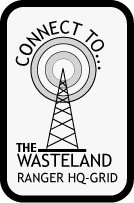
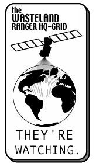
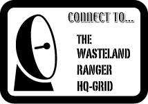
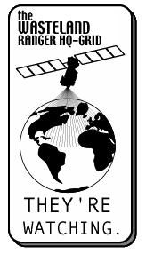
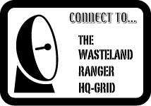
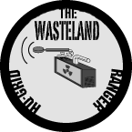
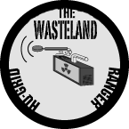

"Wasteland Now!"
This page serves as a historical archive of the various official site graphics The Wasteland HQ-Grid has adopted over the course of its existence, as well as a place where folks wishing to link to the HQ-Grid may browse to find a button to use on their home page.
If you would like to create a link on your own home page to The Wasteland Ranger HQ-Grid, then please, by all means, do so!
One way of doing it might be to download one of the graphics below, and place it in the same directory as the page you want to place the link on. Then, insert the following HTML code:
Visit The Wasteland Ranger HQ-Grid by selecting the following graphic link!
<a href="http://wasteland.rockdud.net">
<img src="wlbutton.gif"
alt="The Wasteland Ranger HQ-Grid">
</a>

The following batch of graphics were created by J. Tirrell, who won The (First) Wasteland Ranger HQ-Grid button contest. Be sure to also view Ranger Tirrell's flash animation located in the foyer.


 



 

This animated button was created by taking apart the old "Netscape Now!" button, altering each frame (changing the N to a W, replacing the text), and pasting it back together. I used GIF Construction Set to accomplish this. I know, it was a big rip-off, but I think it served this site well for many years! (By the way, there was no official version 3.0 of The HQ-Grid....)
- Site Graphics
- Front Desk
- Comm Center
- Underground
- Reading Room
- File Room
- End Status
- Rec Center
- ⇒ Site Graphics
- Links

This webpage complies with the W3C XHTML standards.
October 31, 2001 graphics are Copyright © J. Tirrell.
October 28, 1997 button is Copyright © Bernard Assaf.